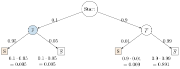
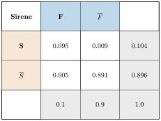

Aufgabe 5.4
Eine Brandmeldeanlage gebe in 5% aller Brandfälle keinen Alarm. Die Wahrscheinlichkeit eines Fehlalarms betrage 1%. In einer Fabrikationshalle sei das tägliche Brandrisiko 10%. Wie gross ist dann die Wahrscheinlichkeit, dass es in der Halle tatsächlich brennt, wenn die Sirene heult? Bestimmen Sie auch die Wahrscheinlichkeit, dass es brennt, obwohl die Sirene nicht heult.
- Definieren Sie F (Feuer) und S (Sirene heult)
- Erstellen Sie ein Baumdiagramm mit den gegebenen Wahrscheinlichkeiten
- Berechnen Sie $P(S)$ mit der Formel der totalen Wahrscheinlichkeit
- Verwenden Sie den Satz von Bayes für beide Teilaufgaben
Gegeben:
- $P(F) = 0.1$ (tägliches Brandrisiko 10%)
- $P_F(\overline{S}) = 0.05$ (in 5% aller Brandfälle kein Alarm)
- $P_{\overline{F}}(S) = 0.01$ (Fehlalarmrate 1%)
Gesucht:
- $P_S(F)$ (Wahrscheinlichkeit für Feuer bei heulender Sirene)
- $P_{\overline{S}}(F)$ (Wahrscheinlichkeit für Feuer bei stiller Sirene)
Vorbereitende Berechnungen:
- $P_F(S) = 1 - P_F(\overline{S}) = 1 - 0.05 = 0.95$
- $P_{\overline{F}}(\overline{S}) = 1 - P_{\overline{F}}(S) = 1 - 0.01 = 0.99$
- $P(\overline{F}) = 1 - P(F) = 0.9$
Lösungsweg 1: Mit Baumdiagramm

Totale Wahrscheinlichkeiten:
- $P(S) = 0.095 + 0.009 = 0.104$
- $P(\overline{S}) = 0.005 + 0.891 = 0.896$
Bedingte Wahrscheinlichkeiten: $$P_S(F) = \frac{P(F \cap S)}{P(S)} = \frac{0.095}{0.104} \approx 0.9135 = 91.35\%$$ $$P_{\overline{S}}(F) = \frac{P(F \cap \overline{S})}{P(\overline{S})} = \frac{0.005}{0.896} \approx 0.0056 = 0.56\%$$
Lösungsweg 2: Mit Vierfeldertafel

Aus der Tabelle lesen wir direkt ab: $$P_S(F) = \frac{0.095}{0.104} \approx 91.35\%$$ $$P_{\overline{S}}(F) = \frac{0.005}{0.896} \approx 0.56\%$$
Antworten:
- Bei heulender Sirene beträgt die Wahrscheinlichkeit für ein tatsächliches Feuer etwa 91.3%
- Bei stiller Sirene beträgt die Wahrscheinlichkeit für ein Feuer nur etwa 0.6%
Interpretation:
Die Brandmeldeanlage funktioniert sehr gut. Das hohe Brandrisiko von 10% macht die Anlage besonders wertvoll: Trotz gelegentlicher Fehlalarme ist die Wahrscheinlichkeit eines echten Feuers bei Alarm über 90%.